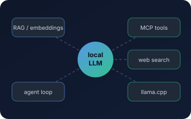
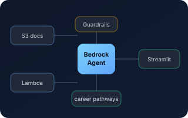
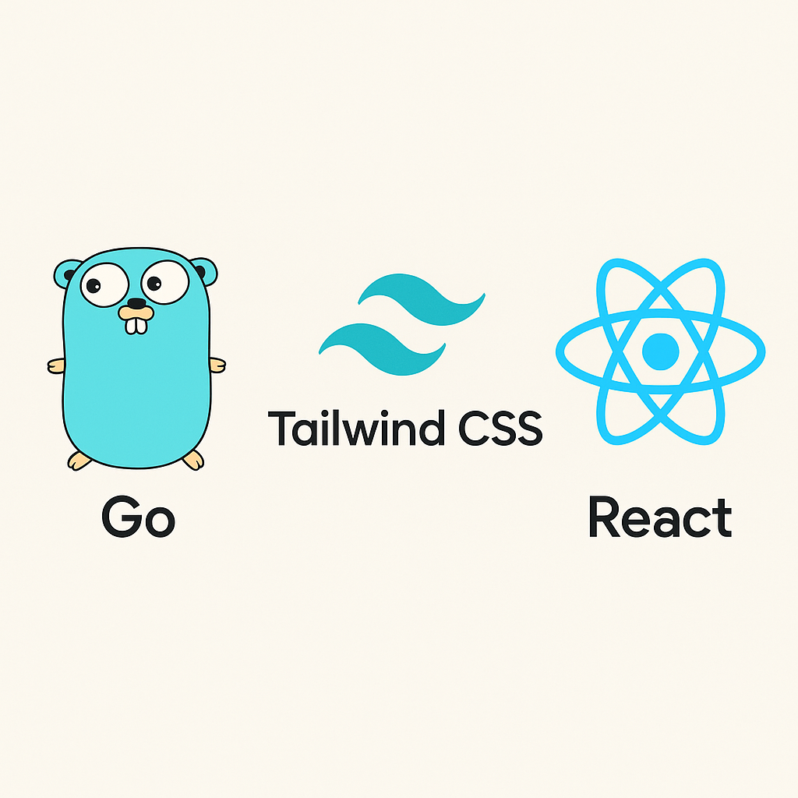
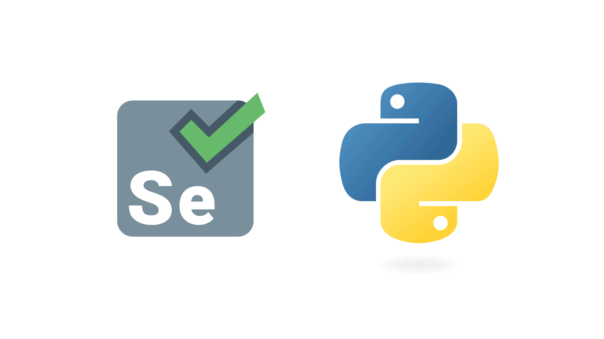
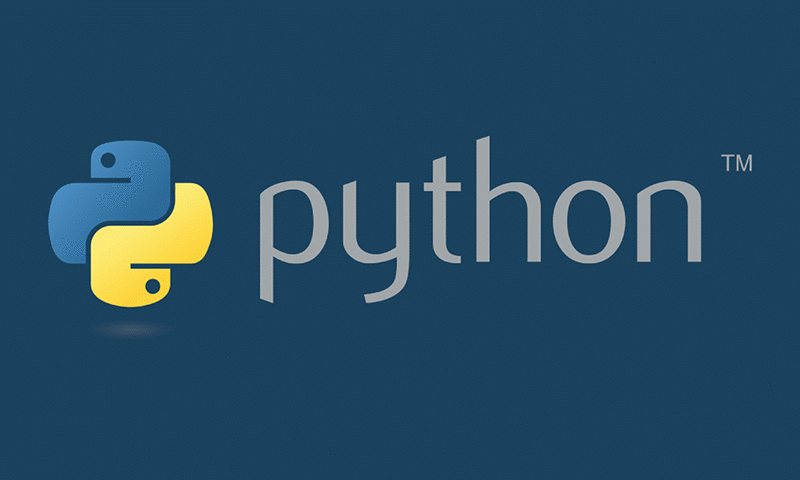

About
I build systems end-to-end: models behind FastAPI services, Go and Python backends, React frontends, and the data plumbing underneath — Oracle, AWS, Docker, and Linux. I enjoy turning messy systems into clean APIs and dashboards that people actually use.
My approach combines practical software engineering with research-driven machine learning. At Pasadena City College, I build production systems serving tens of thousands of users. At UT Austin, I explore deep learning architectures, from transformers to vision-language models to implementing papers and experimenting with novel approaches.
What excites me most is the intersection: applying ML research to real problems, optimizing models for production constraints, and building systems that make complex technology accessible. Whether it's fine-tuning a language model with LoRA, standing up a self-hosted LLM stack with RAG and tool use, or designing a GraphQL middleware layer, I focus on solutions that work reliably at scale.
Skills & Education
Machine Learning
Generative AI
AI Systems
Software
Cloud & Data
Education
M.S. Artificial Intelligence
UT Austin · Jan 2025 – May 2027
B.S. Computer Science
CSU San Bernardino · Sept 2014 – Dec 2017
Featured Projects

Agentic AI & Local LLM Systems Lab
Self-hosted AI environment: llama.cpp with Gemma-family models for private inference, RAG, and agentic workflows. AnythingLLM, Qwen3 embeddings, and agent tooling (Hermes, OpenCode, Pi Agent) wired to local endpoints, with SearxNG, Firecrawl, Tavily, Brave, and Exa exposed as MCP-style tools.

AWS Bedrock Student Pathways Prototype
Generative-AI prototype that helps community-college students explore programs and career pathways: Bedrock Agents with S3 knowledge sources, Lambda-backed actions, and Bedrock Guardrails for retrieval, deterministic logic, and safety controls.

Class Search Portal & Hub
React + Go middleware over vendor GraphQL/REST. Card-based results, filters that scroll with the cursor. Serving 40k+ users.

SuperTuxKart AI
Built CNN/Transformer models for classification, segmentation, detection; trained an autonomous driving agent.
Autoregressive Image Generator
Decoder-only Transformer that generates images token-by-token from a quantized codebook (BSQ/VQ). Trained end-to-end on SuperTuxKart frames.
More Projects
Trip Mobile
Android travel app with Google Maps and Firebase realtime DB.

Flotsam
Arcade adventure built in Unity3D.

Job Bot
Automates job applications on multiple boards using Selenium.
Azure AD Scripts
Automation for user & group provisioning with Python and PowerShell.

Flappy Bird VR
VR re‑imagining of a classic using Unity.

Save Emails
Tkinter app that logs your recent Outlook sent messages.
Disk Usage Scan
Win scripts to audit and trigger cleanups when storage > threshold.
UT Austin • AI/ML Coursework
Graduate coursework covering deep learning, transformers, and NLP with hands-on implementation experience
Transformers & LLMs
- Built transformer from scratch for character-level classification (98% accuracy on letter counting task)
- Transformer language model achieving 6.3 perplexity on text8 dataset with causal masking
- Fine-tuned SmolLM2 (1.7B) using LoRA for unit conversion with supervised fine-tuning (SFT) and rejection sampling fine-tuning (RFT)
- MLP & Transformer planners for autonomous driving in SuperTuxKart with learned query embeddings
Computer Vision
- CNN semantic segmentation with U-Net architecture achieving IoU > 0.75 for road boundary detection
- Multi-task learning for joint depth estimation (MAE < 0.05) and segmentation
- Vision-language models (VLM + CLIP) achieving 70%+ accuracy on multi-modal QA tasks
- Autoregressive image generation using Binary Spherical Quantization (BSQ) with patch-level tokenization
- CNN planners for end-to-end autonomous driving from raw images to waypoint prediction
Model Optimization
- Low-precision training with half-precision (FP16) achieving 50% memory reduction
- LoRA adapters for parameter-efficient fine-tuning on large models
- 4-bit quantization using block quantization achieving 7x memory reduction
- QLoRA implementation combining quantization with low-rank adaptation for efficient fine-tuning
Classical ML & NLP
- Sentiment classification with perceptron (74%) and logistic regression (77%) using advanced feature engineering
- Deep averaging networks with GloVe embeddings achieving 77% accuracy on sentiment analysis
- Typo-robust inference using spelling correction and prefix embeddings (74% on corrupted text)
- Fact-checking system using DeBERTa for textual entailment on ChatGPT outputs (83% accuracy)
- Dataset artifact analysis identifying and mitigating spurious correlations in NLI/QA benchmarks
Publications
Compares five deep learning architectures (1D CNN, LSTM, GRU, CNN-LSTM, and Transformer Encoder) for multi-label classification of 12-lead ECGs on the PTB-XL dataset across five diagnostic superclasses, with the 1D CNN achieving the strongest macro F1 and ROC-AUC.
Investigates hypothesis bias in ELECTRA-small on SNLI, finding a hypothesis-only baseline nearly matches the full model (89.40% vs 89.69%). Identifies error categories from spurious artifacts and shows that ensemble debiasing via hypothesis-only confidence alone is insufficient for robust NLI reasoning.
Predicts ZIP-code-level housing values across Los Angeles County using publicly available data and machine learning models, demonstrating that open civic datasets can drive accurate real-estate valuation at the neighborhood scale.
Presentations
UT REAL Health AI Symposium
California Heart Rhythm Symposium
Experience
Programmer Analyst • Pasadena City College
- Built and deployed a production ML pipeline (Python, LightGBM, scikit-learn) forecasting course enrollment and cancellation risk from ~104K Oracle records over 10 years — 17% lower section-level prediction error and at-risk detection ROC-AUC up from 0.80 to 0.95 versus the historical baseline, using time-based splits to avoid data leakage.
- Designed the model-serving architecture: FastAPI behind an existing Go backend, exposing predictions through REST APIs to a React scheduling application.
- Built and maintained Go services supporting a student platform with 40K+ concurrent users, with Docker deployment and CI/CD automation.
- Developed a class-schedule platform (React on AWS Amplify, Go API on EC2) with ALB/TLS, Apache reverse proxying, and application caching; redesigned caching from an incremental comparison model to a three-minute snapshot refresh, eliminating timeouts and stale data during registration peaks.
- Python and Bash automation for scheduled data exchange with 5+ external vendors (transfer, validation, retries, monitoring), and Oracle/GraphQL query tuning that cut latency by ~60%.
Software Developer • Cloudsquare
- Built a real-time edge-AI face-detection pipeline with TensorFlow Lite on Raspberry Pi hardware for client demos and prototypes.
- Backend integrations for enterprise applications using Microsoft Graph, Plaid, Reuters, and Salesforce APIs.
- Delivered across frontend, backend, integration, and deployment layers for enterprise client projects.
Database Administrator • ADR Services, Inc.
- Optimized Oracle query execution plans, removing unnecessary table scans and improving retrieval performance by ~60%.
- Developed Python ETL pipelines automating data transformation, governance, validation, and integrity checks.
Junior System Administrator • CSU San Bernardino
- Administered Linux/Unix and Windows infrastructure supporting campus computer labs serving 1,000+ students.
- Automated administration and deployment with Ansible, Bash, PowerShell, and Docker, cutting repetitive provisioning from hours to minutes.
- Supported Samba, Active Directory, monitoring, backup, and patching, and wrote documentation and runbooks for support staff.